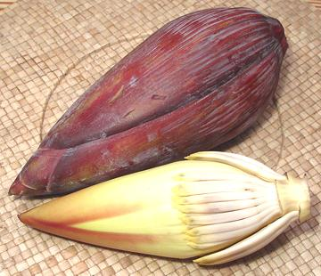

Banana Blossom

[banana heart; banana bell (Australia); Dok kluai (Thai);
Mak Bpee (Laos); Shang chao fua (China); Musa acuminata,
M. balbisiana and M. acuminata x balbisiana]
This pointy heart shape item is the male inflorescence of the banana or
plantain plant. It forms a point at the end of the flowering stem and
consists of red leaf like bracts covering rows of male flowers. The bracts
curl up one by one, each exposing a row of flowers (not "baby bananas" as so
many descriptions say). Above the "blossom" are a large number of female
flowers that will mature into bananas Commercial bananas are sterile, so
the male inflorescence is not needed and is often cut off and sold
separately.
The photo specimens weighed 1 pound 2 ounces, were 3-3/8 inches diameter
and 8-3/4 inches long, about medium size. They were imported from Mexico,
as most sold in California are (The U.S. is too cool for successful banana
cultivation).
Banana blossom tastes a bit like banana peel but less bitter and
astringent. The red outer bracts are not edible but make very nice
decorative boats for serving salads and such in.
More on Bananas.
Buying:
Banana blossoms are used in Southeast Asian,
African and tropical American cuisines. They are most easily available in
markets serving a Southeast Asian community, particularly Philippine.
Select firm, bright colored blossoms. They can be stored in the
refrigerator, wrapped in plastic, for a few days. I understand dried
banana blossom is also sold, but I have seen only fresh here in Los
Angeles.
Prep:
You need to peel off the tough, bitter outer bract
layers and their associated flowers until you get to the yellow inner
layers which are brittle rather than tough. The inner section can then be
sliced or diced for use in recipes. The moment you cut them put the pieces
in a bowl of cold water acidulated with citric acid or lemon juice, they
discolor very quickly. A 1 pound 2-1/8 ounce blossom yielded 6 ounces
of crisp edible material (33%).
Subst:
If you can't get banana blossoms or don't like
their slightly bitter flavor, you can replace them in recipes with
slivered Bamboo Shoots.
bn_blossz 101029 - www.clovegarden.com
©Andrew Grygus - agryg@clovegarden.com - Photos on this
page not otherwise credited are © cg1 -
Linking to and non-commercial use of this page permitted